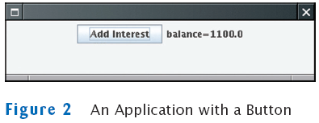

Building Applications with Buttons
- Example: investment viewer program; whenever button is clicked, interest is added, and new balance is displayed

- Construct an object of the JButton class:
JButton button = new JButton("Add Interest");
- We need a user interface component that displays a message:
JLabel label = new JLabel("balance=" + account.getBalance());
- Use a JPanel container to group multiple user interface components together:
JPanel panel = new JPanel();
panel.add(button);
panel.add(label);
frame.add(panel);